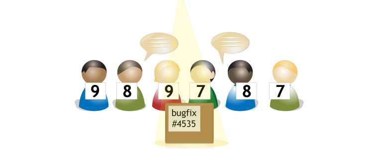

4 of 11
Code review

Launchpad encourages high quality contributions to your project by making code review public. Anyone can propose their code for merger with any other branch linked to your project. From there, your community can view the proposed branch, conduct a threaded conversation and publicly vote on whether it’s ready for inclusion.
Reviews by email and web
Adapting your project's workflow to use Launchpad for code review is easy.

Your code reviews are publicly visible, and easily discovered by anyone interested in your project, by tracking the conversation and how people have voted in Launchpad’s web interface. However, rather than having to visit Launchpad to take part in the discussion, you can comment, reply and vote directly from your email account.
See whose vote counts
Public code review helps squash bugs before they make it into your code-base by increasing the number of people who can take part.

When it comes to making a final decision on whether to accept someone’s branch, though, you naturally give more weight to the opinions of certain people. Launchpad visually distinguishes the votes and comments of the members of the team that owns the target branch.